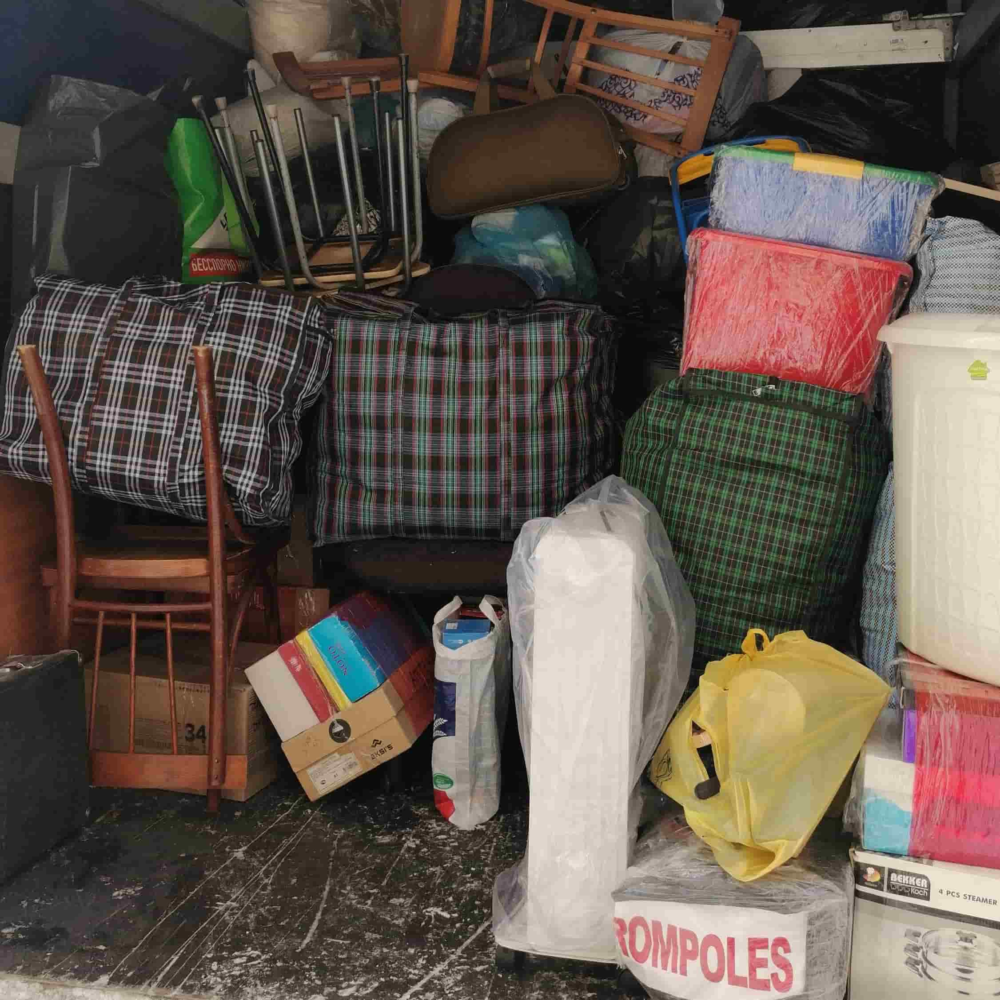
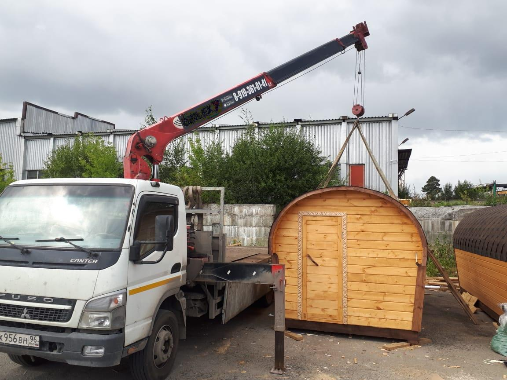

СОДЕРЖАНИЕ
Последние новости


О ГАЗелях
- Рынок малотоннажных грузоперевозок 2022
- Стоит ли покупать Газель в 2022 году?
- Транспортные услуги в 2022 году: стоимость 1 км на ГАЗели
- Где найти заказы на газель?
- Газель Бизнес. Сейчас это — не бизнес
- Услуги пятиметровой газели по Екатеринбургу на час
- Как выбрать ГАЗель для грузоперевозок
- Выбираем оптимальный двигатель на газель
- Самозанятость для работы на своей газели. Насколько актуально и востребовано
- Грузоперевозки на газели: ожидания новичка и текущая реальность
- Окупаемость ГБО на автомобилях семейства “Газель”
- Оптимальное расстояние при заказе услуг малотоннажного транспорта
- Грузоперевозки в 2020 году. Стоит ли покупать газель?
- Оказание транспортных услуг. Подводные камни для перевозчика
- Грузоперевозки. Сколько стоит "довести до ума" новый грузовик после автосалона?
- Формирование цены на транспортные услуги "Газель" по Екатеринбургу
- Перегруз на газели. Разбираемся в КОАП РФ

Финансовые вопросы
- Практическая сторона организации автомобильных грузоперевозок догрузами на ГАЗели
- Выгодно ли покупать патент, чтобы заниматься грузоперевозками на ГАЗели?
- Самозанятость для грузоперевозок на ГАЗели. Насколько выгодно?
- Транспортные услуги в 2022 году: стоимость 1 км на ГАЗели
- Грузоперевозки на газели. Финансовое обоснование
- Стоимость 1 км на ГАЗели. Объективная оценка
- Самозанятость в транспортных услугах — нереализуемые возможности
- Стоимость услуг газели в Екатеринбурге: цена за час работы
- Отмена ЕНВД с 01.01.2021 г. Что выбрать перевозчику: самозанятость или патент?
- Самозанятость для работы на своей газели. Насколько актуально и востребовано
- Прием платежей от физиков ИП. Честный бизнес
- Коммерческая эффективность грузового автомобиля. Современные реалии
- Окупаемость ГБО на автомобилях семейства “Газель”
- Перенос сроков сдачи отчетности в ФНС
- Приобретение грузового транспорта в лизинг
- Грузоперевозки и глобальный кризис 2020 года
- Незаконная коммерческая деятельность
- Оптимизация налогового бремени грузоперевозчика. Самозанятость, ИП на ЕНВД, ИП на «Доходах»
- Формирование цены на транспортные услуги "Газель" по Екатеринбургу

Квартирные и офисные переезды
- Грузчики дешево. Делаем выводы
- Экономим на переезде. Правильный выбор грузчиков. Советы профессионалов
- Как рассчитать объем вещей при квартирном переезде
- Планируете квартирный переезд? Мы поможем сделать это экономно!
Последние новости


Автомобильные грузоперевозки
- Грузоперевозки на газели дешево. Как выбрать перевозчика и на что обратить внимание
- Как выбрать ГАЗель для грузоперевозок
- Конкуренция на транспорте. Как бороться. Тезисы
- Перевозчик выходит на прямого заказчика — скользкий момент логистики
- Грузоперевозки через АТИ
- Биржи грузов в интернете. Что они несут перевозчику: доход или головную боль?
- "Случайные люди" как одна из главных проблем в грузоперевозках
- Коммерческая эффективность грузового автомобиля. Современные реалии
- Выбираем профессионального перевозчика. Какие правильные вопросы необходимо задать при первом общении
- Перевозка грузов на газелях. Незаменимый функционал городских логистических цепей поставок
- Планирование бизнеса: наемный транспорт & транспорт предприятия
- Междугородные перевозки через транспортные компании — прямой путь к банкротству перевозчика
- Оптимальное расстояние при заказе услуг малотоннажного транспорта
- Нужен ли путевой лист ИП?
- Государственная помощь транспортному сектору. Очередная фикция с целью пустить пыль в глаза населению
- Оказание транспортных услуг. Подводные камни для перевозчика
- Грузоперевозки. Сколько стоит "довести до ума" новый грузовик после автосалона?
- ПДД. Опасное вождение. Вопросы и ответы
- Рынок транспортных услуг. Перемены грядут ...
- Превышение скорости на 10 км/ч

Транспортные компании и перевозчики
- Выбираем профессионального перевозчика. Какие правильные вопросы необходимо задать при первом общении
- Где найти дешевого перевозчика на газели
- Планирование бизнеса: наемный транспорт & транспорт предприятия
- Утопия: транспортный холдинг - спасение частных перевозчиков
- Схемы мошенничества в грузоперевозках
- Нужен ли путевой лист ИП?
- Транспортные услуги по Екатеринбургу: такси или частный перевозчик
- Услуги экспедирования грузов. Кто такой экспедитор. Разбираемся в понятиях
- Грузоперевозки. Информация для заказчика